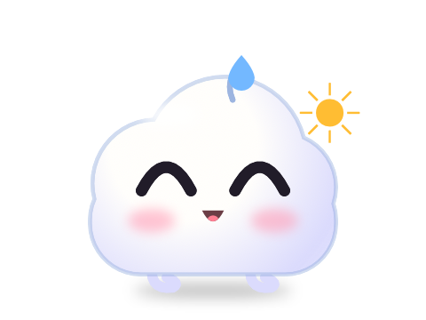
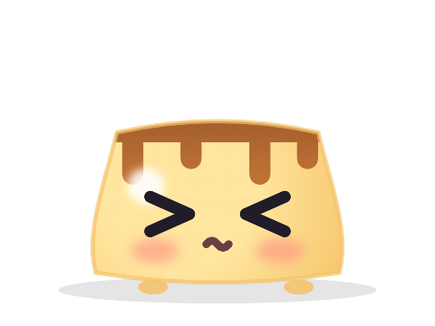
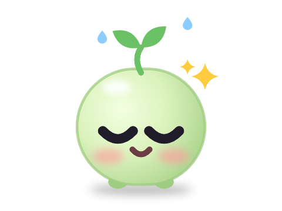
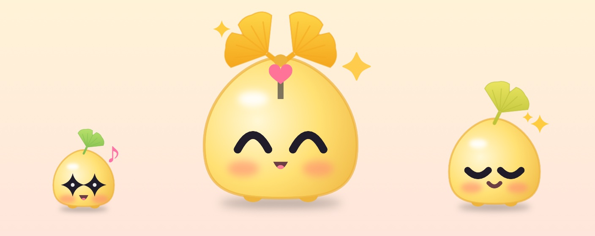
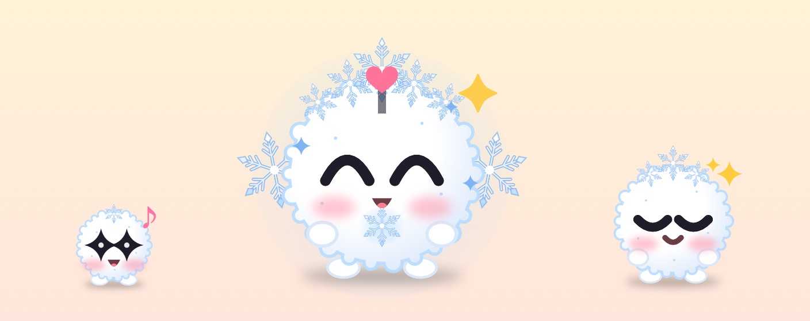
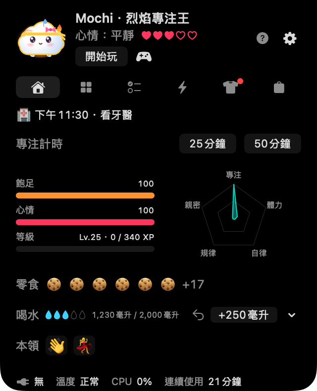
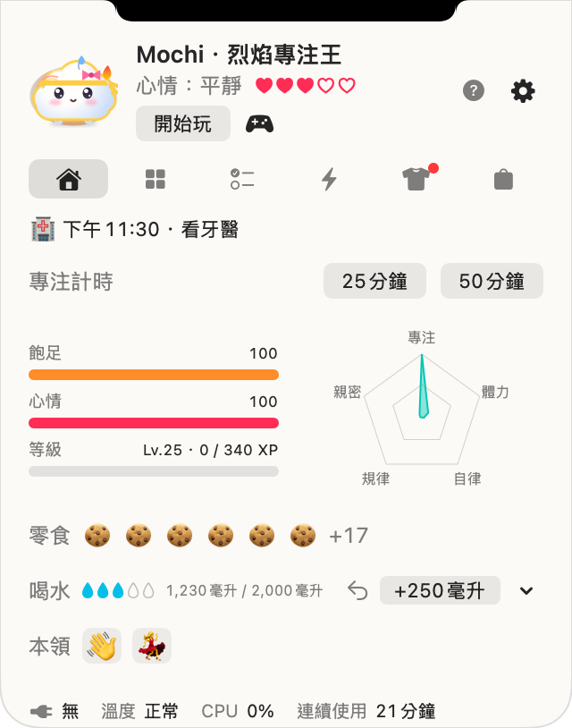
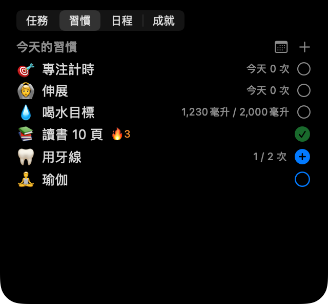

叩叩，我是諾奇！
一隻住在 MacBook 瀏海旁的軟軟小夥伴。你工作時，牠會溫柔提醒你喝水、伸展、好好休息，還有今天的行程。你越照顧自己，牠就從蛋裡孵出，陪你一起長大。





五位夥伴，全部免費
☁️ 綿綿
雲朵寶寶心情就是天氣：餓了會下小雨，完成今天的喝水目標就放晴。
🧶 絨絨
毛絨球充電時肚子貼地趴著，指標靠近時耳朵會豎起來。
🍮 彈彈
布丁Mac 發熱時會滴著焦糖融化，充電時開心地晃來晃去。
🌱 豆豆
發芽的豆子完成今天的喝水目標會閃閃發光，睏了葉子會垂下來。
🌙 棉兔
月兔棉花糖晚上 9 點以後，額頭上的彎月會發光。
季節夥伴
Noki Plus 會員每個季節都能遇見一位限定夥伴，季節過去、Plus 結束後也會一直陪著你：秋天是銀杏寶（銀杏麻糬）和楓葉寶（楓葉），冬天是雪團寶（毛茸茸的雪球）和包子寶（圍著圍巾的包子）。


和你的 Mac 一起呼吸
諾奇會對電量、充電、發熱、鍵盤和滑鼠活動以及螢幕睡眠做出反應，這些都只在你的 Mac 上讀取。牠的臉能表現 13 種心情，開啟天氣後還會依照外面的天氣撐傘或圍上圍巾。
照顧你的一天
💧 喝水與伸展
一鍵記錄一杯水，可以儲存自己的杯子，也能補記離開 Mac 時喝的水。久坐時溫柔提醒你伸展，還有 25 或 50 分鐘的專注計時。
🌱 習慣與行程
依次數或時間設定自己的習慣，一個月的習慣月曆，附提醒的行程，以及（連結後的）Mac 行事曆。
🏆 任務與成就
每天三個任務、35 個成就以及每週和每月挑戰，獎勵點心可以買衣服。
🎾 一起玩
摸摸牠、在螢幕上丟球給牠、玩三個小遊戲，或和朋友交換代碼來對戰。



輕巧，而且只在你的 Mac 上
呼吸動畫不會重繪畫面，所以平時 CPU 使用率接近 0%，螢幕睡眠時諾奇也會休息。寵物和紀錄只儲存在你的 Mac 上：沒有帳號，也沒有伺服器。詳見隱私權政策。
即將推出
麻糬諾奇正在和朋友們一起打磨。上架 Mac App Store 後，我們會在這裡和更新消息中通知你。
- 搭載 Apple 晶片的 Mac（M1 或更新），macOS 14 Sonoma 或以上版本
- 沒有瀏海的 Mac 或外接顯示器上，螢幕頂部中央會出現虛擬瀏海。也可以改為選單列圖示。
- 五位夥伴和核心功能全部免費。Noki Plus（可選）提供無限習慣、諾奇每月的信和季節夥伴。

和諾奇一起過一天，
告訴我們你最喜歡哪位夥伴 💌
所有圖片都由 App 實際的繪圖程式碼畫出。